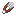

Только в основной руке. Первая дойка решает пол: 50 на 50, и больше он не меняется. Корова даёт ведро молока, бык даёт ведро спермы. Ведро кладётся в свободный слот, а не остаётся в руке.
№2218.05.2026механика · фермерство
Дойкабыка и разорителя
У каждой коровы теперь есть пол, и узнаёшь ты его только с ведром в руке. Корова даст молоко. Бык даст ведро, которое лучше не нюхать. Разоритель после дойки забывает, зачем пришёл в деревню, а стриженый бык иногда оказывается медным.
bucket · shears · sword
пол выпадает при первой дойкеЗагон
Шесть коров, про которых ничего не известно. Бери в хотбаре ведро, ножницы или меч и кликай по той, что стоит на помосте. Всё считается так же, как в моде: пол, варианты шерсти, дроп.
Корова №1
клик по корове — применить предмет из руки
Инвентарь

НожницыРаботают только на быке с шерстью. Монетка: медный бык или лысый бык плюс 1–2 кожи. Ножницы теряют 1 прочность, звук как у стрижки овцы.
 Смерть
СмертьОбычный бык роняет то же, что корова. Лысый — без кожи. Медный — без кожи, зато с 1–3 блоками медной шерсти.
ravager · tamed
секретный способ обезвредитьРазоритель
Разорителя тоже можно подоить обычным пустым ведром. Пол у него не проверяется: ведро спермы выдаётся сразу, а сам зверь становится смирным навсегда, даже после перезахода в мир.
агрессивный
До дойки
- бросается на игроков, жителей и железных големов
- таранит и кусает, оглушается щитом
- катает на спине разбойника или вызывателя
- приходит с рейдом
После дойки
- все цели сброшены, списка целей больше нет
- гуляет медленно, на 0.4 от своей скорости
- смотрит на игроков в радиусе 6 блоков
- крутит головой и держится на воде
zitraksmode:sperm_bucket
пьётся 1,6 секундыВедро спермы

Ведро спермы
Бонус сразу после глотка. Один из четырёх, по 25%:
выпито: 0
shears · copper wool
шанс 1 к 4 с каждой коровыМедный бык
Медная шерсть не крафтится и не лежит в сундуках. Её носит только медный бык, а до медного быка каждая корова идёт через две монетки: сначала пол, потом ножницы.
Медная шерсть
Блок, как обычная шерсть: ломается так же быстро, звучит тканью, на карте оранжевый. На всех шести гранях одна и та же ухмылка. Есть в творческой вкладке мода, а в выживании нужна для двух вещей: скрафтить испанские сапоги и чинить их на наковальне.
Сколько коров на сапоги?
Нужно 4 шерсти. Считаем без хитростей: каждую корову доим, если бык — стрижём, если медный — забиваем.
—коров в среднем
zitraksmode:spanish_boots
скорость ×2 · кровьИспанские сапоги
0,0 с
Верхняя дорожка — обычный спринт, нижняя — в сапогах. Сердца сверху — того, кто в сапогах.
Ремонт на наковальне
Одна медная шерсть = четверть прочности (112 из 450) за 1 уровень. Медный слиток тоже чинит, по обычным правилам наковальни.
details
Тонкости
creative
наведи — подсказка как в игреПредметы
advancements
Достижения
0 / 0
changelog
Версии
Молоко, сперма или медь.
Ведро узнает первым